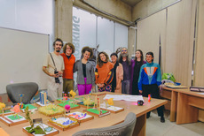
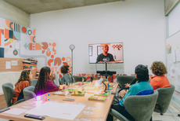
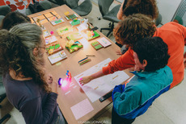
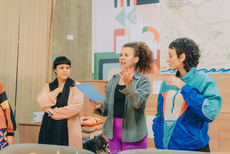
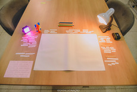

Cidade Sensível é uma exposição coletiva interdisciplinar que propõe a construção de uma cidade imaginária a partir dos sonhos, desejos, memórias e percepções de habitantes do oeste paulista. Partindo da pergunta “e se a cidade fosse construída a partir dos sonhos de quem a habita?”, o projeto investigou, de maneira poética e crítica, as camadas do território urbano — passado, presente e futuro — considerando especialmente os impactos sociais, sensoriais e afetivos da vida contemporânea no extremo oeste do Estado de São Paulo.
Conceitualmente, a exposição desloca a centralidade da visão e propõe uma experiência sinestésica e interativa, integrando artes visuais, sonoras, táteis, performativas e audiovisuais. A cidade é entendida não como representação fiel do real, mas como sobreposição de realidades vividas, imaginadas e desejadas, revelando tensões entre sonho e cotidiano, acessibilidade e exclusão, pertencimento e direito à cidade. A interatividade é compreendida como estratégia estética e política, convidando o público a atuar como agente ativo na construção de sentidos da obra. Programaticamente, Cidade Sensível estrutura-se a partir de um processo de criação colaborativo, tendo como ponto de partida a realização de 4 oficinas, que funcionaram como disparadores conceituais e materiais para o desenvolvimento das obras. Como ação expandida do projeto, integrou o programa a intervenção urbana Bocas do Rio – Canção Subterrânea. Exploramos dessa forma os fluxos cotidianos como suporte para reflexão crítica sobre arte e meio ambiente através da linguagem de “site specific”.
Para a realização da exposição, contamos com seis artistas expositores de diferentes linguagens. O espaço expositivo reuniu obras interativas que exploram maquetes táteis-sonoras, jogos digitais, instalações sensoriais e videoarte, compondo uma experiência imersiva acessível a diferentes corpos e modos de percepção. A abertura contou com a performance “Cidade Dorme” resultado do processo da oficina de performance urbana que mesclou artes performativas e visuais. As máscaras utilizadas ficaram presentes no espaço expositivo e serviram como objetos de mediação.
Como pesquisa utilizamos os livros: “Sonho Manifesto” de Sidarta Ribeiro”, “Arte com Acessibilidade” de Karen Montija e “Bem mais que ideias” de Patricia Hill Collins. Para viabilizar essas experiências, o projeto utilizou de ampla pesquisa de recursos de arte e tecnologia como: sensores, câmeras, dispositivos sonoros e microcomputadores, resultando em obras reativas que respondem à presença do público por meio de som, imagem e tato através de características vibracionais. A opção por tecnologias open source (código aberto) reforça o compromisso conceitual com a democratização do acesso ao conhecimento e aos meios de produção artística, alinhando inovação tecnológica, responsabilidade social e formação de público.
Por fim, alinhada aos princípios de democratização e acessibilidade, todas as atividades do projeto foram gratuitas e contaram com intérprete de Libras, audiodescrição, visitas mediadas, piso tátil, acessibilidade arquitetônica e apoio logístico a participantes de instituições parceiras. Entendemos que os sentidos ativados por Cidade Sensível não se esgotam em um único território. Por isso declaramos aqui nosso compromisso em continuar nossas pesquisas e captar por onde estivermos os sonhos de quem nos habita.